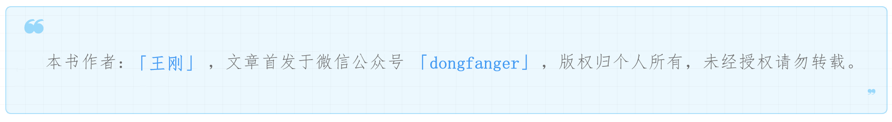

独家连载¶

1 一招致胜¶
冬天。
木叶萧萧，朝阳升起。
高铁上，坐着一个人，就仿佛已与这个天地融为一体。
因为他太安静。
因为风太冷。
一种已深入骨髓的冷漠与疲倦，却又偏偏带着种兴奋的喜悦。
他疲倦，也许只因为他纠结了太多的选择。
他喜悦，只因为他终于做出了选择。
北京到杭州。
第一份工作。
测试工程师。
他很急。
他急着要离开校园，急着要兑现天赋。
测试的天赋。
测试需要细心、耐心、责任心、逻辑思维、逆向思维。
他知道他早已具备，与生俱来。
2014年。
XMind还没有流行。
测试用例，还写在Excel。
他工作的第一件事，看用例执行。
横七竖八的表格，眼花缭乱。
用例不是代码，没有人喜欢写用例。
更没有人喜欢看用例。
尤其是别人写的用例。
他手上的青筋凸起，额上的冷汗如豆，他不能接受这种机会。
可是他又不愿放弃这机会。
他笑了笑，笑容也很疲倦。
测试类型，设计人，日期，用例编号，用例名称，用例描述。
序号，测试说明，前提条件，步骤描述，预期结果，数据准备。
在早些年的时候，一条一条用例的写，是无法避免的。
而且还会有评比，比写的细，比用词准确，比语言规范。
想不到测试是这样的。
他的手冰冷。
他抬起头，才看见天空远远的飘来五个字。
那都不是事。
既然无法避免，又何必再为它烦恼忧虑？
天空更亮，光明已将照耀大地。
他笑了。这次他的笑容中已不再有那种疲倦之意，只有讥诮和冷酷。
就这？还不简单？
执行本身没有什么难度。
他本身是个内心平静的人。
他有天赋，他肯吃苦。
他已恢复自信。
自信，是一种强有力的武器，而且是最犀利的一种。
调整心态，测试本来就是重复枯燥的。
开发又何尝不是码农。
代码是一个一个敲出来的。
用例也需要一条一条执行。
他知道自己已经入门了。
他充满了决心。
他可以执行的很好。
他已经执行的很好。
公司中认得他名字的人不多，知道他这个人的也不多。
他毕竟还只是个新人。
刚毕业的应届生。
他的强执行力已经出名。
名声，有时候就像是个包袱，一个永远都甩不脱的包袱。
匹夫无罪，怀璧其罪。就像是麝的香，羚羊的角。
这道理他当然明白。
面对着初来乍到的荣誉。
他怔了怔，然后就发现了一件可怕的事。
只这一招，就致胜了。
这么容易么？
不是的。
为什么？
2 时来运转¶
因为他的名声，还不是真正的名声！
只是相对于应届生的标准。
挑战还没有到来。
周末的天气很好。
飞来峰下，西水湖前。
他静静站着。
内心很快乐。
他希望未来的路，能一直像这么样走，走远一点，越远越好。
他忽然发现何必患得患失，至少头开的还不错。
他也不再去想。
第二天。
一大早。
开发找到了他，笑了笑。
开发很少笑，笑容生涩而怪异。
开发道：“你昨天提的这个bug是什么意思？”
他道：“哦？”
开发道：“你这提的只有问题，我都不知道该怎么重现。”
他道：“哦。”
开发道：“你要把重现步骤写上，我才可以根据步骤来重现。”
他没有直接回答。
开发道：“还有你贴的这个日志，对我排查问题一点用都没有。”
他红了脸。手握紧。瞳孔在收缩。
他道：“好。”
开发冷冷的接着道：“你可以去看看他们是怎么提bug的。”
他笑了笑，笑容中带着种说不出的讥诮之意。
开发道：“？？？”
他道：“不是，我笑得是我自己。”
开发道：“哦？”
他道：“没事。”
他拱拱手，一句话都不再说，掉头就走。
他走下了楼，长舒了一口气。
他已背熟bug的属性和流转状态。
bug属性包括编号、提交日期、测试人员、指派给、标题、问题描述、功能模块、严重程度、优先级。
bug流转状态包括新建、打开、修复中、验证中、测试不通过、已关闭。
他忽然发现，理论终究不是实践。
他一定要把bug写好。
他看着其他人提的bug，看了很久。
环境、用户、数据。
前提条件、重现步骤。
实际结果、预期结果。
有截图，图上也有标红的备注。
一个bug不会包括十几个小bug。
一个bug也不只简单的最小bug。
拆分的合理且精确。
不一定那么标准。
但这些要素一个都没有少。
他提交bug前，反复检查了3遍。
确保自己能看懂，别人能看懂。
一周后。
一大早。
开发找到了他。大笑。
笑得甜又媚。
他道：“怎么了？”
开发嫣然道：“我今天不用加班了。”
他道：“为啥？”
开发道：“因为你提的bug很好，我很快就定位改了。”
他道：“那我也不用加班了？”
开发道：“当然。”
世上虽然有不少好人好事，像这样的好事倒还不多。
开发道：“这是你的运气？还是我的？”
他道：“当然是我的。”
开发道：“为什么？”
他道：“据说一个人bug写的最烂的时候，总是会转运的。”
这是第一天。
第二天也一样。
他们这一周都没有加班。
阳光昭射在窗台上，他正准备下班。
领导走了过来。
3 千奇百怪¶
领导道：“最近表现不错。明天需求评审会议，你也参加下。”
他道：“好勒。”内心充满了希望。
第二天。会议室。
来了七八个同事。
产品经理简单的开场白后，讲起了需求。
他努力的听着。很认真，很仔细。
精神十足。绞尽脑汁。却已走神。
他感觉被人一拳打飞了出去。
重重的摔在地上。
两眼无神。一动也不动。
连叫都没有叫出来。
他想到了。
飞来峰下，西水湖前。
那个信誓旦旦的自己。
有些悲哀。
他悲哀，是为了人。
人类。
谁知道人类有多少不如意，不幸福，不快乐的事，
是隐藏在如意、幸福、快乐中的？
谁知道？
他内心的愤怒燃起。
就在这时，办公室的声音突然停顿！
他回过神来。
惊慌失措。
什么情况？
在场的人眼睛里都露出种很奇怪的表情。
风吹木叶，阳光满地。
声音停顿后，过了很久很久，办公室都没有声音发出来。
他不知道究竟发生了什么事。
为什么都不说话了？
他准备问旁边的妹子。
产品经理突然道：“如果大家没有什么问题，今天就先到这。”
原来是会已经开完了。
他走神走到会已开完。
会已开完。
已开完。
开完。
完。
他笑了。
本来想听个透彻的。
结果却听了个麻花。
他的脸有点发白。
业务对他来说，还是太复杂。
他摇摇头。
一个天赋之人，竟会在需求评审，听得走神。
心里是什么滋味？
失败过的人都能想得到。
他忽然听见了一个脚步声。
踏在地板上，走得很轻，很慢。
领导走过来，微笑着拍了拍他的头，道：“没关系，慢慢来。”
似已将他看穿。
他点头。
外面的天气很好。
他的心情却很差。
无论谁都看得出他有点郁闷。
可是他要做的事却好像不太对劲。
他走向产品经理。
他道：“刚才的业务，能不能帮我再讲讲？”
产品道：“看来还是有人没听懂呀，好我给你讲讲。”
他点点头。
产品耐心的讲。
他耐心的听。
产品笑道：“不错呀，业务理解能力很强嘛。”
他腼腆笑了。
失败是所有人都会经历的。
能积极的面对。
才是真正的勇气。
与其叹息，不如出击。
业务理解能力是什么？
藕断丝连，珠联璧合。
满天星雨，千奇百怪。
蛛丝马迹，脉络清晰。
知业务之所述，想业务之未提。
业务不是技术，可岂非是人人都喜欢的？
这世上真正喜欢做业务的又有几个人？
开发做多了业务，都会觉得没什么成长。
何况是测试？
4 笑口常开¶
测试可以不做业务。
就做那种只有几十个人使用的公司内部系统。
有些叫做测试平台，有些叫做能效平台。
到底有没有前途，他想不通，也不必再想。
因为这样的纯技术岗位，实在太少。
就连不做业务只做技术的开发，都少的可怜。
有业务才有商机。
有商机才能赚钱。
这道理再简单不过了。
本叶已枯黄的老树下，铺着张桌子，桌上有一台笔记本，一杯热咖啡。
这显然已到周末下午。
他在星巴克学习。
IT行业需要不断的学习，这是圈内都默认了的。
连他也不例外。
这周领导给他分配了新任务。
写测试用例。
凉爽干燥的空气中，充满了木叶的芬芳。
他却仿佛完全没有感觉。
他在纠结，Excel的用例该怎么写。
公司有模板，但他写起来却很困难。
他不想写那么无聊的过场话。
也不想简单的把需求抄一遍。
他决定了。
不写Excel，写XMind。
他的眼睛发出了光。
这一瞬间的辉煌的光芒，已足以照耀他的生命。
他相信他的决定是正确的。
测试的目的是找Bug，不是咬文嚼字。
绝不是！
他庆幸自己遇到了好公司，好领导。
让员工放手去干，只要结果是对的。
如果有按自己想法做事的机会，谁愿意放弃？
XMind真香！
可以按自己的想法，酣畅淋漓的写。
可基本要素却是缺一不可的。
包括前提条件、测试步骤、预期结果，以及测试数据。
既不能照抄需求。
也不能写成白话。
合理拆分，由大化小，点点到位。
相比Excel，没有格式束缚。
可对覆盖率会有更高的要求。
XMind写出来的测试用例，会把测试思维完全暴露出来！
他很快就写好了。
可是他心里很慌。
他还是个菜鸡。
能写的有多好。
一位真正的测试高手，果然对风险是异常敏感的。
绝对比女人的第六感还要来的准。
果然，在测试执行过程中，漏洞霹雳巴拉的蹦出来。
冲击着他的思维局限。
他的双手放在鼠标和键盘上，发现自己掌心已有了冷汗。
狂风卷开大地时，岂非也难免有遗漏的地方？
可是当狂风吹过来时，有谁能注意到这些地方？
他安慰自己。
他还是个菜鸡。
有疏忽也是必然。
现在唯一能做的，积累。
遇到没想到的，补充上去，总结下来。
一点一滴，聚沙成塔，丰富自己的测试用例库。
测试结束，他补充了三分之一的测试用例。
他对这次上线有充足的信心。
可是他错了。
上线出问题。
项目经理气冲冲的找到了他。
5 痴心妄想¶
项目经理道：“你是怎么测的，为什么这么简单的问题都没测出来？”
他沉默，林木静寂。
他凝视着地板，仿佛在沉思。
对于测试来说，背锅是很正常的。
既然经过了测试。
如果发现了问题。
第一反应自然是测试的锅。
毕竟是项目交付最后一环。
有办法改变别人的看法？
没有。只能接受。
那他什么都不能做？
不是。
可以做点什么？
甩锅。
测试背锅若是一把锁。
他已找到开锁的钥匙。
这把钥匙若是一把剑。
这一剑刺出，是什么样的力量！
项目经理似乎感受到了这股力量。
不由得往后退了两三步。
项目经理道：“你，你，你为何还不说话？”
他开口了，自信而淡然。
他道：“先把问题原因定位一下。”
一炷香的功夫。
他精神一振，道：“这个问题我提了的，开发没有改。”
他拿出了 Bug 单。
证据确凿。
无可反驳。
项目经理苦笑道：“什么情况？”
开发表示根本不知道有这个 Bug。
这就是江湖人。
江湖人，都会甩锅！
人在江湖，岂非本就像是风中的落叶，水中的浮萍？
他大笑。他是真的在笑。
可是他心里究竟是什么滋味？
又有谁知道？
他眨了眨眼，道：“那我以后把优先级和严重程度标明显一点吧。”
甩锅失败。
甩锅是有可能会失败的。
但是不甩一甩，怎么知道成功还是失败。
冷冽的冬天。
山坡后的草包已衰。
有风吹过。
一片落叶飘下。
他抬起头，凝视着天空。
感受着微微的阳光。
他希望能有机会，再甩一次锅。
很快机会就来了。
又是上线问题。
又是项目经理。
又是同样的话。
又是那个开发。
又是说不知道。
老油条就是老油条。
他的肾上腺素飙升。
似要发作。
内心的愤怒却忽然变成了粉末。
瞬间就被吹得无影无踪。
他看着开发那油腻的脸庞。
心里忽然觉得有点酸酸的。
自己以后是不是也会这样。
可是他的担忧是多余的。
他会遇到更优秀的开发。
他冷冷道：“我优先级写的是 Highest，定级也是 P2。”
开发道：“是吗？不是吧。”
试图做最后的挣扎。
项目经理走过去拍了拍开发的头。
项目经理道：“是你的问题，今天改完了才准下班！”
开发脸色惨白：“为什么受伤的总是我？”
测试不是背锅侠。
如何聪明的甩锅。
是值得研究和学习的。
讲事实，摆道理。
切勿带有情绪。
说很容易，做到很难。
这天，开发笑嘻的道，“你这提的不是 Bug！”
他没有再开口。
可是他的人已有了动作。